00:03你已经学习了梯度下降，多元线性回归，还有向量化。
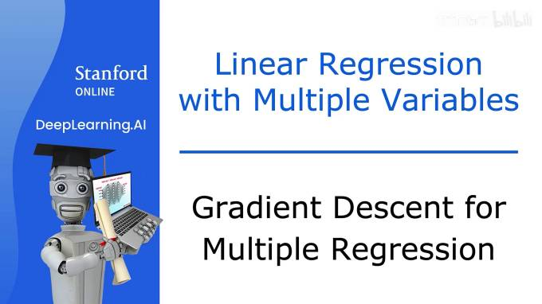
00:09让我们把这些结合起来，用向量化为多元线性回归实现梯度下降。
00:18我们先快速回顾一下多元线性回归是什么样子的。
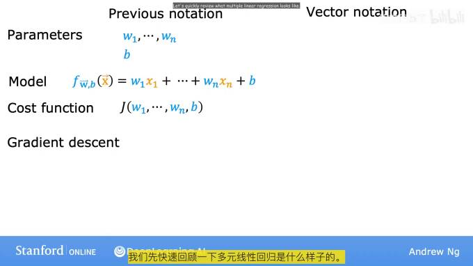
00:23使用我们之前的符号，我们来看看如何用向量符号更简洁地书写它。
00:29我们有参数 w 一到 wn 以及 b，但我们不把 w 一到 w n 看作是独立的数字，即独立的参数，而是让我们把所有 W 收集到一个向量 W 中，这样现在 W 就是一个长度为 n 的向量。
00:52所以我们只需将此模型的参数视为一个向量 w 以及 b，其中 b 仍然是一个数字，与之前一样。
01:02之前我们是这样定义多元线性回归的，现在用向量符号，我们可以将模型写为，f 关于 w、b 和 x 等于向量 w 点乘向量 x 再加上 b。
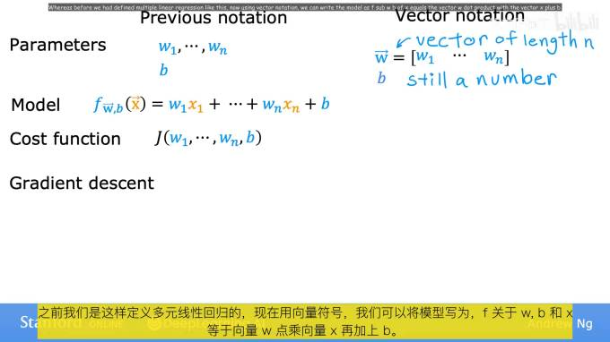
01:18记住，这里的点表示点积。
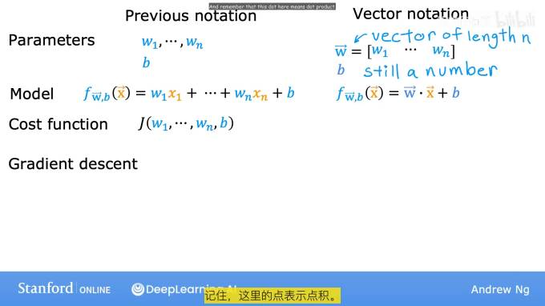
01:22我们的代价函数可以定义为 j 关于 w 一到 w n。
01:29和 b 的函数，但我们不把 j 仅仅看作这 n 个不同参数 wj 以及 b 的函数，我们要把 j 写为参数向量 w 和数字 b 的函数。
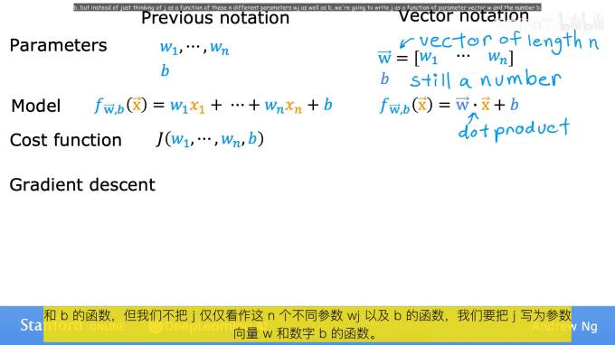
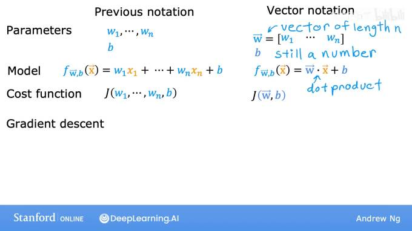
01:45所以这 w-到 w n 被这个向量 w 所替代。
01:52而 j 现在接受其输入，m-个向量 w 和一个数字 b，并返回一个数字。
02:02我们将重复地更新每个参数 wj，使其等于 wj 减去 alpha 乘以代价 j 的导数，其中 j 有参数一全和 b。
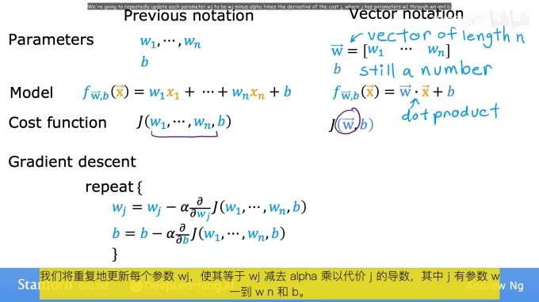
02:18再次，我们把这个记为关于向量 w 和数字 b 的 j。
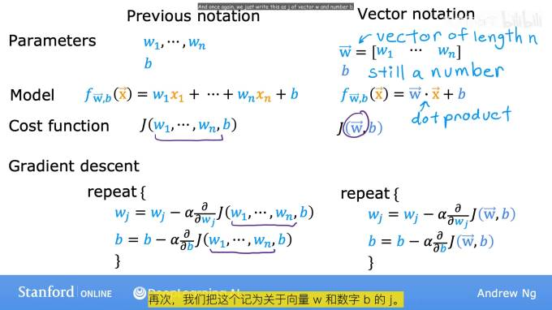
02:25我们来看看当你实现梯度下降时，这会是什么样子。
02:30特别地，我们来看看导数项。
02:34我们将会看到，和单一特征相比，有多个特征时的梯度下降会变得有些许不同。
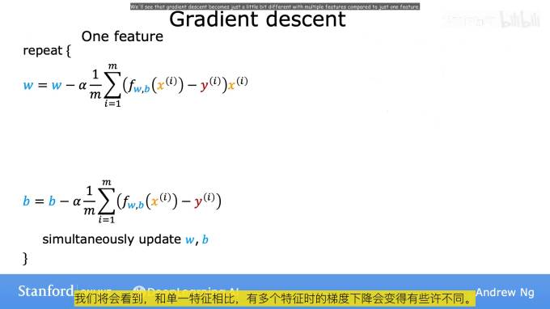
02:42这是我们只有一个特征时做梯度下降所用的式子。
02:47我们对 w 有一条更新规则，对 b 有另一条独立的更新规则。
02:56这里这一项是代价函数 j 关于参数 w 的导数。
03:04类似地，我们对参数 b 也有一条更新规则。
03:08在单变量回归中，我们只有一个特征，现在，这是我们当有 n 个特征，且 n 大于等于二时的新记号。
03:24我们得到梯度下降的更新规则，更新 W 一为 w 一减去 alpha 乘以这里的这个表达式。
03:33这个公式实际上就是代价 j 关于 W 一的导数。
03:41右边关于 W 一的导数公式看起来和左边仅有一个特征的情况非常相似。
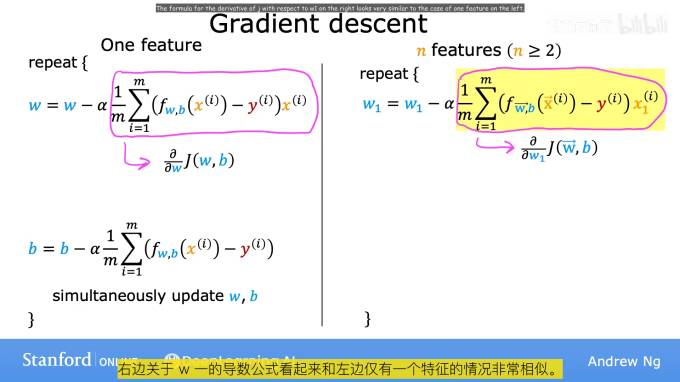
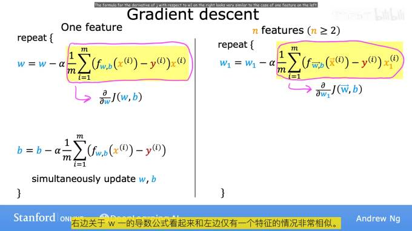
03:50误差项仍然是预测值 f of x 减去目标 y。
03:56一个不同之处在于 w 和 x 现在是向量。
04:02正如左边的 W 现在变成了右边的 W 一，左边的 xi 现在则变成了右边的带下标一的 xi。
04:14而这只针对 j 等于一的情况。
04:19对于多元线性回归，我们有从一变化到 n，所以我们将更新参数 w 一、W 二，一直到 wn。
04:34然后和之前一样，我们将更新 b。
04:39如果你实现了这些，你就得到了多元回归的梯度下降。
04:44以上就是多元回归梯度下降的内容。
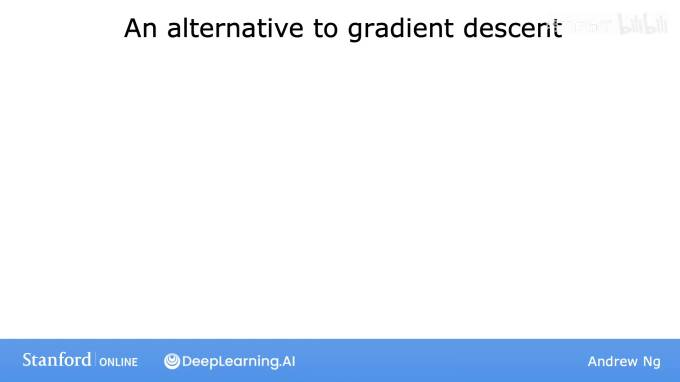
04:49在结束这个视频之前，我想快速提一下，或者说做个旁注，介绍另一种为线性回归寻找 w 和 b 的。
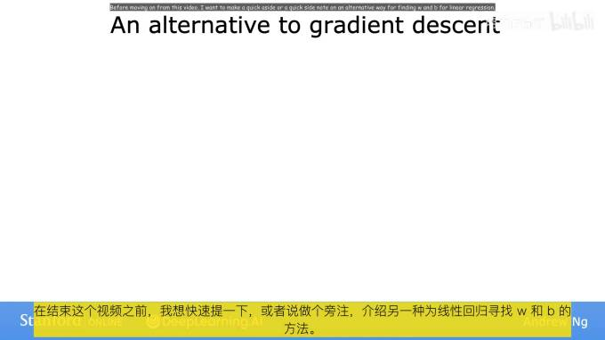
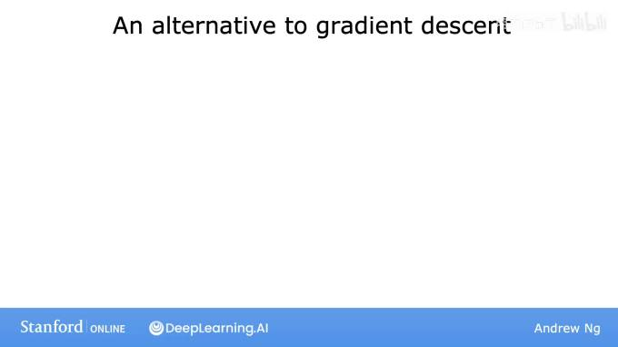
05:06虽然事实证明梯度下降是用于最小化代价函数 j 以找到 w 和 b 的一个极好方法，但还有另一种算法，它只适用于线性回归。
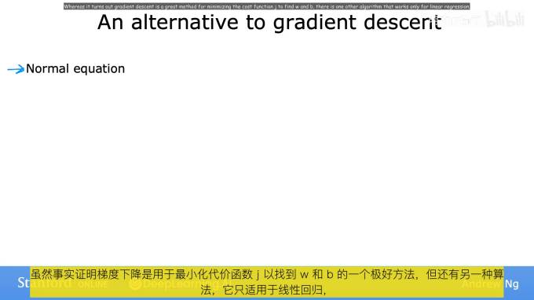
05:18而几乎不适用于你在本专项课程中看到的其他用于求解 w 和 b 的算法。
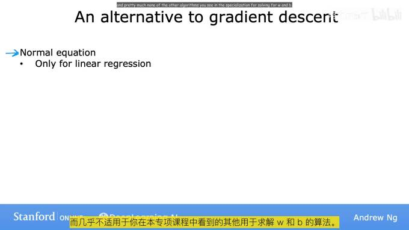
05:27而这种方法不需要迭代式的梯度下降算法。
05:32它被称为正规方程法，事实证明，可以使用高级线性代数库，仅在一次运算中就能直接解出 w 和 b，无需迭代。
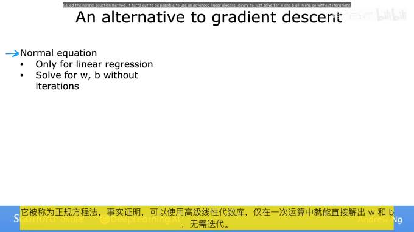
05:44正规方程法的一些缺点是，首先，与梯度下降不同，它不能泛化到其他学习算法上，比如你下周将要学习的逻辑回归算法，或你在本专项课程稍后看到的神经网络或其他算法。
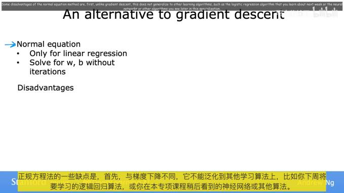
06:02如果特征数量 n 很大，正规方程法也会相当慢。
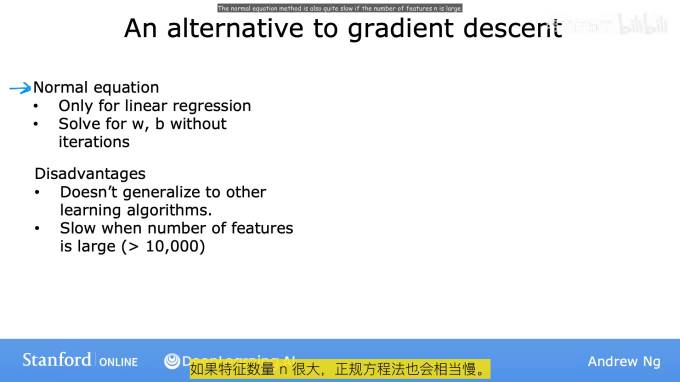
06:07几乎没有任何机器学习从业者应该自己实现正规方程法，但如果你使用一个成熟的机器学习库并调用线性回归，那么在后端，它有可能正使用这种方法来求解 W 和 B。
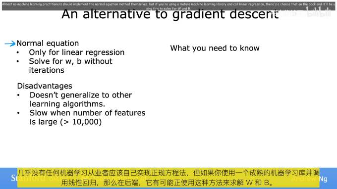
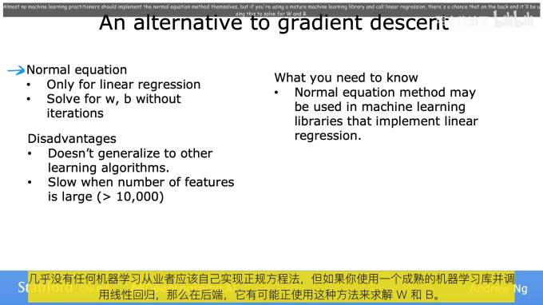
06:26所以，如果你在面试中听到正规方程这个术语，指的就是这个方法。
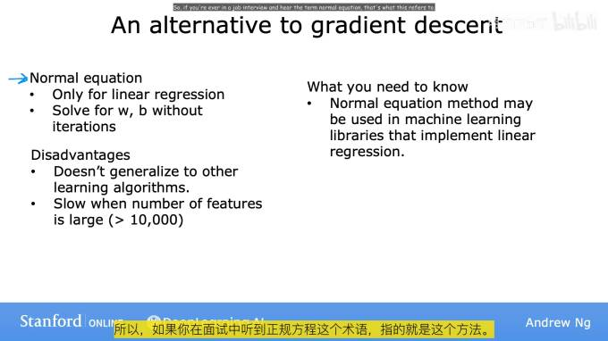
06:32不用担心正规方程的工作原理细节。
06:36只需了解某些机器学习库可能会在其后端使用这种复杂的方法来求解 W 和 B。
06:44但对于大多数学习算法，包括你自己如何实现线性回归，梯度下降往往是完成任务的更好方法。
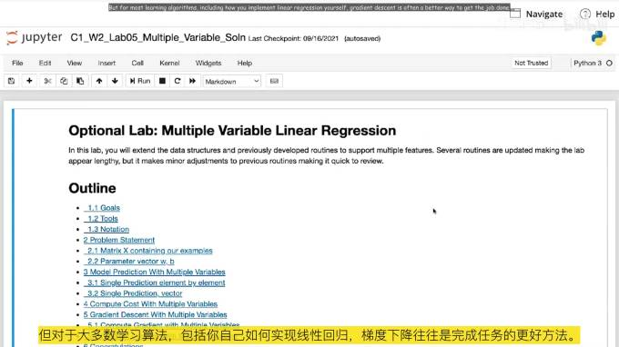
06:54在本视频之后的选修实验中，你将看到如何在代码中定义一个多元回归模型，以及如何计算预测值。
07:06你也会看到如何为一个多元线性回归模型计算代价并实现梯度下降。
07:14这将使用 Python 的 NumPy 库，所以如果有些代码看起来很陌生，那没关系。
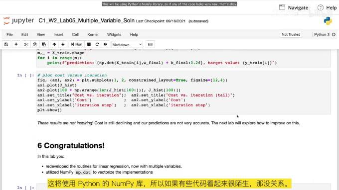
07:24但你也应该可以自由去看看之前那个介绍 NumPy 和向量化的选修实验，来复习一下 NumPy 函数以及如何在代码中实现它们。卫物凝23。
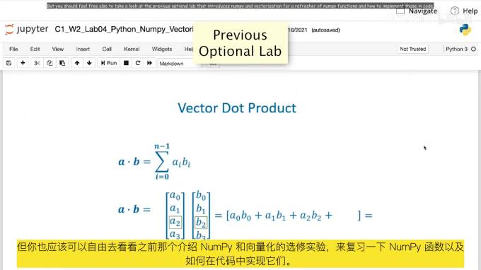
07:34那么，就是这些。
07:36你现在懂得了多元线性回归。
07:39这大概是当今世界上使用最广泛的单一学习算法了。
07:47仅需几个小技巧，比如恰当地选择和缩放特征，以及恰当地选择学习率 alpha，你就能让它工作得好得多。
07:56那么，本周就只剩几个视频了。
08:00让我们进入下一个视频，去看看那些将帮助你把多元线性回归应用得更好的小技巧。